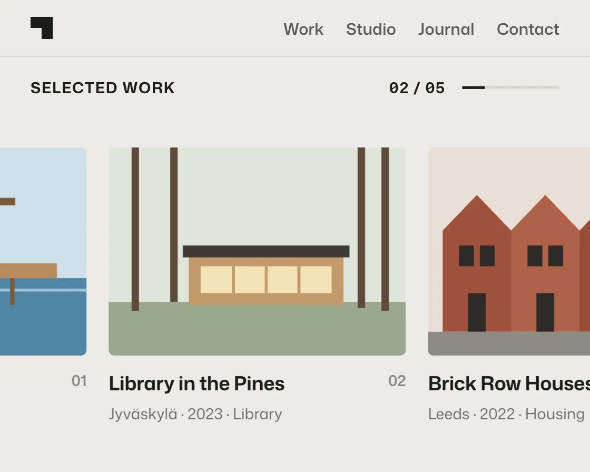

Pinned horizontal track
Pinned horizontal track is a DOM effect: vertical scroll slides a sticky row sideways. One plain JavaScript file with no dependencies; add it with npx motion-library add pinned-track.

Open it live, tune it and copy the code
What is Pinned horizontal track?
A portfolio section pins while scrolling slides a row of projects sideways, with a counter and progress bar.
How does Pinned horizontal track work?
A tall section holds a position: sticky frame; progress through it maps straight to the row’s offset, and the section height sets the pace.
How do I add Pinned horizontal track to my website?
- In your project folder, run
npx motion-library add pinned-track. It writesanimations/pinned-track.js. Needs Node 18 or newer. - Import it and call it with a container element that has a size:
import fx from './animations/pinned-track.js'; const stop = fx(document.querySelector('#hero')); - Call
stop()to clean up, for example when a component unmounts.
Every setting below is also a flag, so you can install it already tuned: npx motion-library add pinned-track --panels 8.
What settings can I tweak?
| Setting | Flag | Default | Range | Step |
|---|---|---|---|---|
| Panels | --panels | 5 | 3 to 8 | 1 |
Specifications
- Renderer
- DOM (CSS and the Web Animations API)
- Category
- Scroll
- Dependencies
- None
- File size
- 10.5 KB, unminified
- Interactive
- Yes: it follows scrolling
- Reduced motion
- Respects prefers-reduced-motion
- Licence
- MIT-0: use it anywhere, no credit needed
Source code
// Pinned horizontal track, on an architecture studio's portfolio: the "Selected work" section pins in place while vertical scrolling slides the row of projects sideways, then lets go.
// position: sticky does the pinning, so the page never hijacks the scroll; the section's height sets the pace, and progress through it maps straight to the row's offset, with a counter and a thin bar so the reader knows how far along they are.
const PARAMS = { panels: 5 };
export default function (stage) {
const reduce = matchMedia('(prefers-reduced-motion: reduce)').matches;
const AH = 340, MINW = 400, NAV = 40;
const projects = [
['Harbour Baths', 'Aarhus · 2024 · Public bath', `<rect width="200" height="140" fill="#cfe0ea"/><rect y="88" width="200" height="52" fill="#4f86a6"/><path d="M0 96h200" stroke="#9cc3d8" stroke-width="2"/><rect x="20" y="78" width="160" height="10" fill="#b98b5e"/><rect x="128" y="34" width="8" height="44" fill="#7a5a3c"/><rect x="118" y="34" width="34" height="5" fill="#7a5a3c"/><path d="M30 88v18M60 88v18M90 88v18M150 88v18" stroke="#7a5a3c" stroke-width="3"/>`],
['Library in the Pines', 'Jyväskylä · 2023 · Library', `<rect width="200" height="140" fill="#dfe5da"/><rect y="104" width="200" height="36" fill="#9aa88c"/><path d="M18 0v110M44 0v104M170 0v108M186 0v110" stroke="#5e4a3a" stroke-width="5"/><rect x="54" y="72" width="104" height="34" fill="#c39a6b"/><rect x="50" y="66" width="112" height="8" fill="#3d3a36"/><rect x="62" y="80" width="88" height="18" fill="#f4e3b8"/><path d="M84 80v18M106 80v18M128 80v18" stroke="#c39a6b" stroke-width="2"/>`],
['Brick Row Houses', 'Leeds · 2022 · Housing', `<rect width="200" height="140" fill="#e8dfd6"/>${[0, 1, 2, 3].map(i => `<path d="M${10 + i * 46} 124V56l23-24 23 24v68z" fill="${['#a0523d', '#b0614a', '#9a4b37', '#ad5a42'][i]}"/><rect x="${21 + i * 46}" y="66" width="10" height="14" fill="#2f2a28"/><rect x="${35 + i * 46}" y="66" width="10" height="14" fill="#2f2a28"/><rect x="${27 + i * 46}" y="98" width="12" height="26" fill="#2f2a28"/>`).join('')}<rect y="124" width="200" height="16" fill="#8d8a84"/>`],
['Ferry Terminal', 'Bergen · 2021 · Transport', `<rect width="200" height="140" fill="#d7dee6"/><path d="M0 84l36-34 30 22 40-40 46 36 48-24v40H0z" fill="#9aa6b2"/><rect y="96" width="200" height="44" fill="#566f86"/><path d="M28 64h150l-20 10H40z" fill="#e9ecef"/><path d="M48 74v26M150 74v26" stroke="#e9ecef" stroke-width="3"/><rect x="58" y="78" width="86" height="20" fill="#bcd2e0" opacity=".85"/>`],
['Hillside Chapel', 'Faroe Islands · 2020 · Chapel', `<rect width="200" height="140" fill="#dde4e3"/><path d="M0 110C50 80 120 70 200 92v48H0z" fill="#7d9a6b"/><path d="M84 92V64l22-30 22 30v28z" fill="#f6f4ef"/><path d="M84 64l22-30 22 30" fill="none" stroke="#2f3a34" stroke-width="5"/><rect x="100" y="74" width="12" height="18" fill="#2f3a34"/><path d="M106 20v14" stroke="#2f3a34" stroke-width="2"/>`],
['Market Hall', 'Porto · 2019 · Market', `<rect width="200" height="140" fill="#efe4d4"/><path d="M14 120V70c30-30 142-30 172 0v50z" fill="#d8b07a"/><path d="M30 120V80M62 120V68M100 120V64M138 120V68M170 120V80" stroke="#7a5532" stroke-width="3"/><path d="M14 70c30-30 142-30 172 0" fill="none" stroke="#7a5532" stroke-width="4"/><rect y="120" width="200" height="20" fill="#b9a68c"/>`],
['Allotment Pavilion', 'Utrecht · 2018 · Community', `<rect width="200" height="140" fill="#e4ead9"/><rect y="98" width="200" height="42" fill="#6d8c4f"/>${[0, 1, 2, 3, 4, 5, 6].map(i => `<path d="M${14 + i * 28} 98v-10" stroke="#3f5a2c" stroke-width="5" stroke-linecap="round"/>`).join('')}<path d="M60 98V62h80v36z" fill="#d7c8a6"/><path d="M52 64l48-24 48 24z" fill="#4b4036"/><rect x="88" y="74" width="24" height="24" fill="#4b4036"/>`],
['Concrete Villa', 'Ticino · 2017 · House', `<rect width="200" height="140" fill="#dfe3e6"/><path d="M0 100C60 86 140 90 200 100v40H0z" fill="#8b9a7e"/><rect x="40" y="58" width="120" height="44" fill="#b9b8b4"/><rect x="70" y="40" width="100" height="22" fill="#a7a6a2"/><rect x="52" y="70" width="60" height="20" fill="#2f3438"/><rect x="128" y="70" width="20" height="32" fill="#2f3438"/>`],
];
const n = Math.max(1, Math.min(projects.length, Math.round(PARAMS.panels)));
const root = document.createElement('div');
root.className = 'pt-root';
root.innerHTML = `<style>
.pt-root { position: absolute; inset: 0; overflow: hidden; background: #ecebe7; color: #1c1c1a; font-family: "Mona Sans", system-ui, -apple-system, sans-serif; }
.pt-art { position: absolute; left: 0; top: 0; height: ${AH}px; transform-origin: 0 0; }
.pt-scroll { position: absolute; inset: 0; overflow-y: auto; overflow-x: hidden; scrollbar-width: none; }
.pt-scroll::-webkit-scrollbar { display: none; }
.pt-nav { position: sticky; top: 0; z-index: 2; height: ${NAV}px; display: flex; align-items: center; gap: 16px; padding: 0 22px; background: #ecebe7; font-size: 11.5px; font-weight: 560; color: #5d5c57; }
.pt-nav i { width: 16px; height: 16px; background: #1c1c1a; margin-right: auto; clip-path: polygon(0 0, 100% 0, 100% 100%, 50% 100%, 50% 50%, 0 50%); }
.pt-intro { padding: 22px 22px 26px; }
.pt-intro h1 { margin: 0; font-size: 34px; line-height: 1.02; font-weight: 700; letter-spacing: -0.03em; }
.pt-intro p { margin: 8px 0 0; max-width: 340px; font-size: 12.5px; line-height: 1.45; color: #5d5c57; }
.pt-frame { position: sticky; top: ${NAV}px; height: ${AH - NAV}px; overflow: hidden; display: grid; grid-template-rows: auto 1fr; grid-template-columns: minmax(0, 1fr); border-top: 1px solid #d6d4cf; }
.pt-head { display: flex; align-items: center; gap: 12px; padding: 14px 22px 0; font-size: 11px; font-weight: 650; letter-spacing: .06em; text-transform: uppercase; }
.pt-head span:first-child { margin-right: auto; }
.pt-count { font-variant-numeric: tabular-nums; }
.pt-line { width: 70px; height: 2px; background: #d6d4cf; overflow: hidden; }
.pt-line i { display: block; height: 100%; background: #1c1c1a; transform-origin: 0 50%; transform: scaleX(0); }
.pt-row { align-self: center; display: flex; gap: 16px; padding: 0 22px; width: max-content; will-change: transform; }
.pt-card { flex: none; width: 214px; }
.pt-card svg { display: block; width: 214px; height: 150px; border-radius: 4px; }
.pt-card b { display: flex; justify-content: space-between; margin-top: 10px; font-size: 14px; font-weight: 650; letter-spacing: -0.01em; }
.pt-card b em { font-style: normal; font-size: 11px; font-weight: 600; color: #8a8984; }
.pt-card span { font-size: 11px; color: #6b6a65; }
.pt-out { padding: 30px 22px 50px; font-size: 22px; font-weight: 650; letter-spacing: -0.02em; }
.pt-out span { display: block; margin-top: 6px; font-size: 12px; font-weight: 500; color: #5d5c57; letter-spacing: 0; }
</style>
<div class="pt-art"><div class="pt-scroll">
<div class="pt-nav"><i></i><span>Work</span><span>Studio</span><span>Journal</span><span>Contact</span></div>
<div class="pt-intro"><h1>Buildings for slow afternoons.</h1><p>A small practice in Copenhagen. We design public places that get better with use: baths, libraries, halls.</p></div>
<div class="pt-track"><div class="pt-frame">
<div class="pt-head"><span>Selected work</span><span class="pt-count"></span><span class="pt-line"><i></i></span></div>
<div class="pt-row">${projects.slice(0, n).map(([t, m, s], i) => `<div class="pt-card"><svg viewBox="0 0 200 140" preserveAspectRatio="xMidYMid slice" aria-hidden="true">${s}</svg><b>${t}<em>${String(i + 1).padStart(2, '0')}</em></b><span>${m}</span></div>`).join('')}</div>
</div></div>
<div class="pt-out">Have a site in mind?<span>Write to us at the studio. We answer every letter.</span></div>
</div></div>`;
stage.append(root);
const art = root.querySelector('.pt-art'), sc = root.querySelector('.pt-scroll'), track = root.querySelector('.pt-track');
const frameEl = root.querySelector('.pt-frame'), row = root.querySelector('.pt-row'), count = root.querySelector('.pt-count'), line = root.querySelector('.pt-line i');
let travel = 0;
const fit = () => {
const W = stage.clientWidth, H = stage.clientHeight, s = Math.min(H / AH, W / MINW) || 1;
art.style.width = W / s + 'px'; art.style.top = (H - AH * s) / 2 + 'px'; art.style.transform = `scale(${s})`;
travel = Math.max(0, row.scrollWidth - frameEl.clientWidth);
// the section is as tall as the sideways travel needs, plus one screen for the pin itself
track.style.height = (AH - NAV) + travel * 1.1 + 'px';
};
const ro = new ResizeObserver(fit); ro.observe(stage); fit();
// Simulated reader: the top, then into the pin, a slow pass along the row with a pause on each project, then out.
const T = () => track.offsetTop - NAV, span = () => track.offsetHeight - (AH - NAV), end = () => sc.scrollHeight - sc.clientHeight;
const stops = [[() => 0, 0, 900], [T, 900, 500]];
for (let i = 1; i < n; i++) stops.push([() => T() + span() * i / (n - 1), 1000, 650]);
stops.push([end, 900, 1000], [() => 0, 1600, 200]);
const ease = t => t < 0.5 ? 4 * t * t * t : 1 - Math.pow(-2 * t + 2, 3) / 2;
let seg = null, si = 0, userUntil = 0, raf, cut = -1;
const take = () => { userUntil = performance.now() + 3000; seg = null; };
['wheel', 'touchstart', 'pointerdown'].forEach(e => sc.addEventListener(e, take, { passive: true }));
function drive(now) {
if (now < userUntil) return;
if (!seg) { const [at, dur, hold] = stops[si++ % stops.length]; seg = { from: sc.scrollTop, to: Math.min(end(), at()), t0: now, dur, hold }; }
const k = seg.dur ? Math.min(1, (now - seg.t0) / seg.dur) : 1;
sc.scrollTop = seg.from + (seg.to - seg.from) * ease(k);
if (now - seg.t0 >= seg.dur + seg.hold) seg = null;
}
function frame(now) {
drive(now);
const p = span() > 0 ? Math.min(1, Math.max(0, (sc.scrollTop - T()) / span())) : 0;
// reduced motion: the row doesn't slide with the scroll; it cuts from project to project with a short fade
const at = Math.round(p * (n - 1));
if (!reduce) row.style.transform = `translateX(${(-p * travel).toFixed(2)}px)`;
else if (at !== cut) { cut = at; row.style.transform = `translateX(${-Math.min(travel, row.children[at].offsetLeft - row.children[0].offsetLeft)}px)`; row.animate([{ opacity: 0 }, { opacity: 1 }], { duration: 240 }); }
line.style.transform = `scaleX(${p.toFixed(4)})`;
count.textContent = `${String(Math.min(n, 1 + Math.round(p * (n - 1)))).padStart(2, '0')} / ${String(n).padStart(2, '0')}`;
raf = requestAnimationFrame(frame);
}
raf = requestAnimationFrame(frame);
return () => { cancelAnimationFrame(raf); ro.disconnect(); root.remove(); };
}